Secure and Trustworthy AI for Autonomous Systems
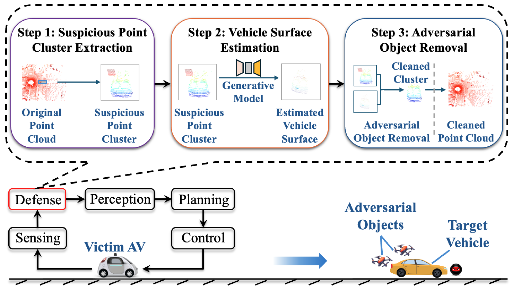
[CCS'25] Towards Real-Time Defense against Object-Based LiDAR Attacks in Autonomous Driving
Yan Zhang, Zihao Liu, Yi Zhu, and Chenglin Miao. 2025 ACM SIGSAC Conference on Computer and Communications Security.
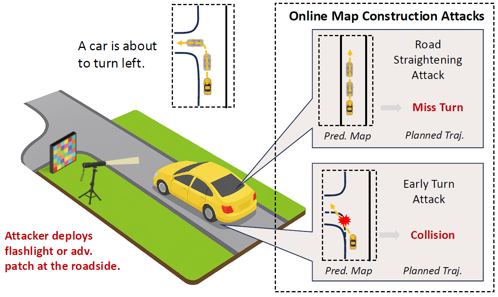
[CCS'25] Asymmetry Vulnerability and Physical Attacks on Online Map Construction for Autonomous Driving
Yang Lou, Haibo Hu, Qun Song, Qian Xu, Yi Zhu, Rui Tan, Wei-Bin Lee, and Jianping Wang. 2025 ACM SIGSAC Conference on Computer and Communications Security.
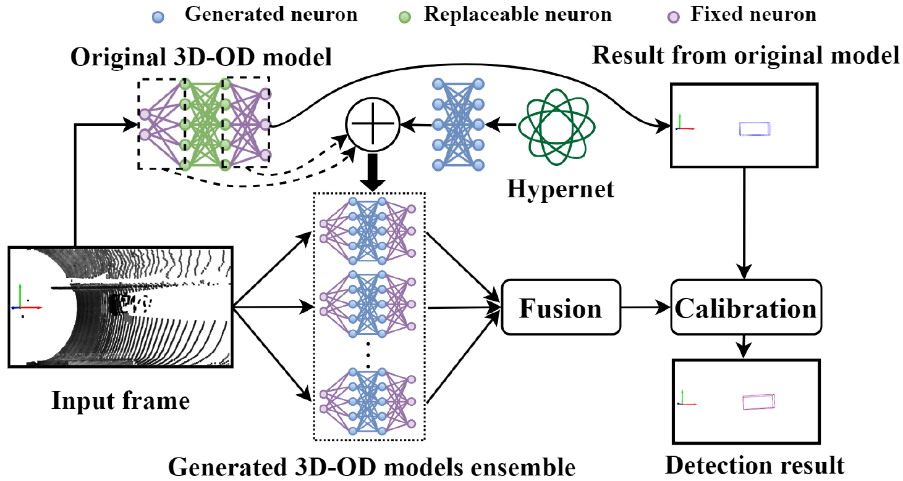
[MobiSys'25] Dynamic Defense against Adversarial Attacks on Car-Borne LiDAR-Based Object Detection
Yihan Xu, Dongfang Guo, Qun Song, Yang Lou, Yi Zhu, Jianping Wang, Chunming Qiao, and Rui Tan. 23rd ACM International Conference on Mobile Systems, Applications, and Services.
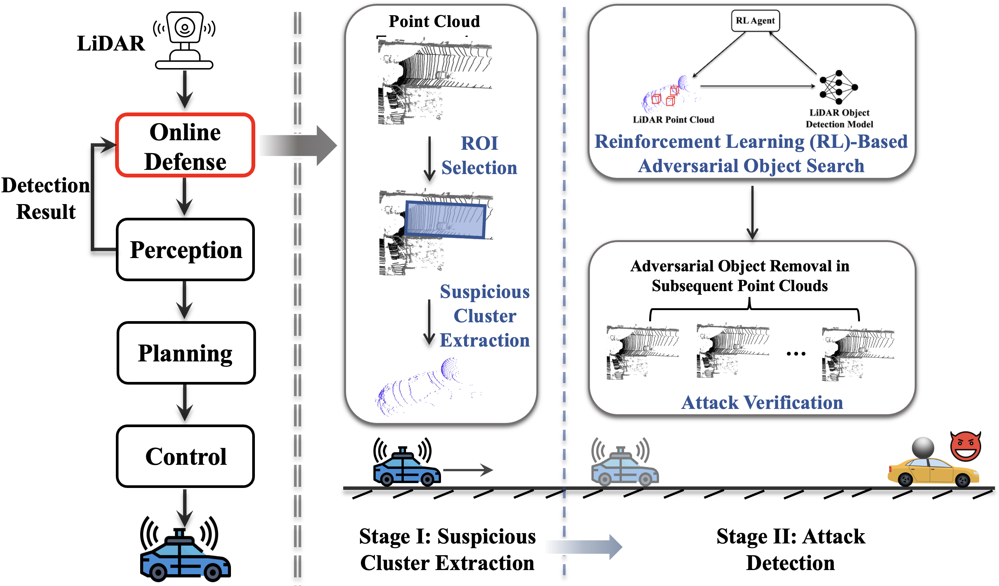
[SenSys'24] An Online Defense against Object-Based LiDAR Attacks in Autonomous Driving
Yan Zhang*, Zihao Liu*, Chongliu Jia, Yi Zhu, Chenglin Miao. The 22nd ACM Conference on Embedded Networked Sensor Systems.
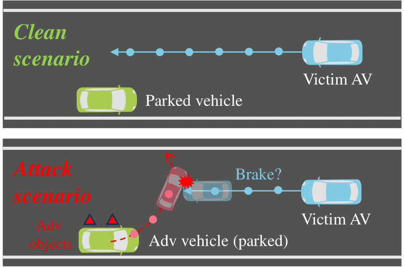
[USENIX Security'24] A First Physical-World Trajectory Prediction Attack via LiDAR-induced Deceptions in Autonomous Driving
Yang Lou*, Yi Zhu* (equal contribution), Qun Song*, Rui Tan, Chunming Qiao, Wei-Bin Lee, and Jianping Wang. The 33rd USENIX Security Symposium.
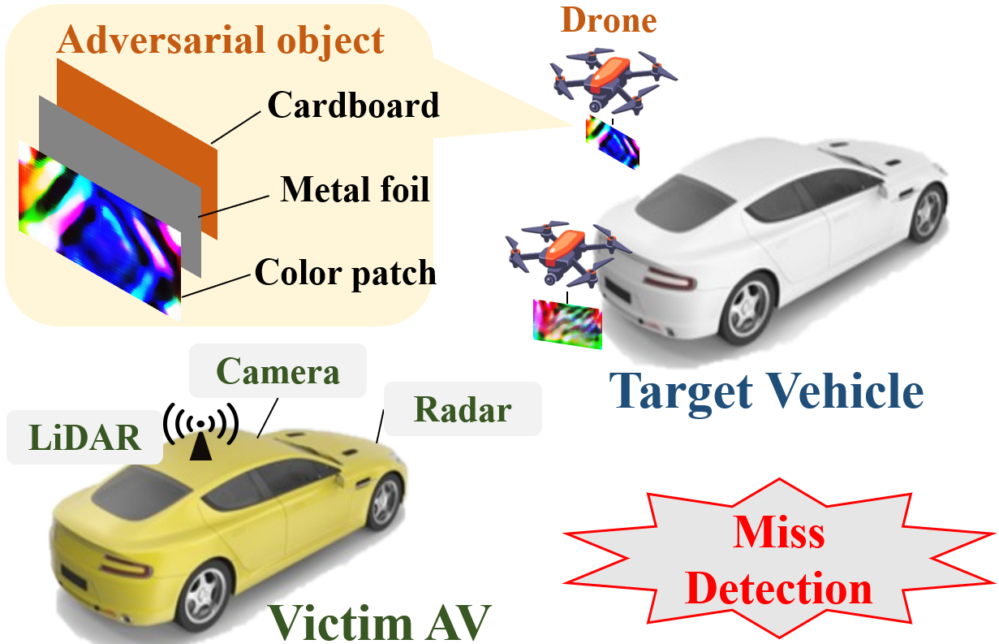
[MobiCom'24] Malicious Attacks against Multi-Sensor Fusion in Autonomous Driving
Yi Zhu, Chenglin Miao, Hongfei Xue, Yunnan Yu, Lu Su, and Chunming Qiao. The 30th Annual International Conference on Mobile Computing and Networking.
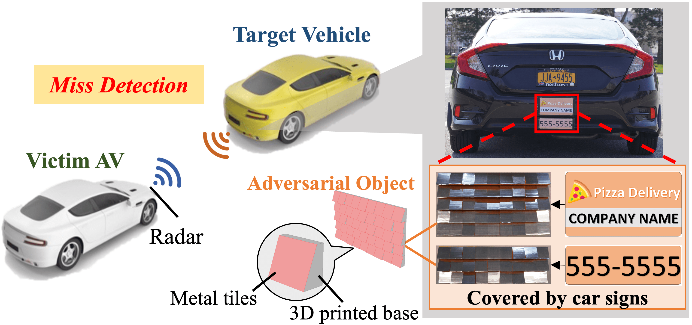
[CCS'23] TileMask: A Passive-Reflection-based Attack against mmWave Radar Object Detection in Autonomous Driving
Yi Zhu, Chenglin Miao, Hongfei Xue, Zhengxiong Li, Yunnan Yu, Wenyao Xu, Lu Su, and Chunming Qiao. 2023 ACM SIGSAC Conference on Computer and Communications Security. (Accept Rate: 19.87%)
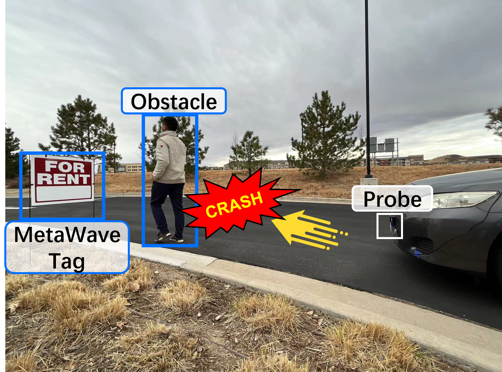
[NDSS'23] MetaWave: Attacking mmWave Sensing with Meta-material-enhanced Tags
Xingyu Chen, Zhengxiong Li, Baicheng Chen, Yi Zhu, Chris Xiaoxuan Lu, Zhengyu Peng, Feng Lin, Wenyao Xu, Kui Ren, and Chunming Qiao. 2023 Network and Distributed System Security (NDSS) Symposium.
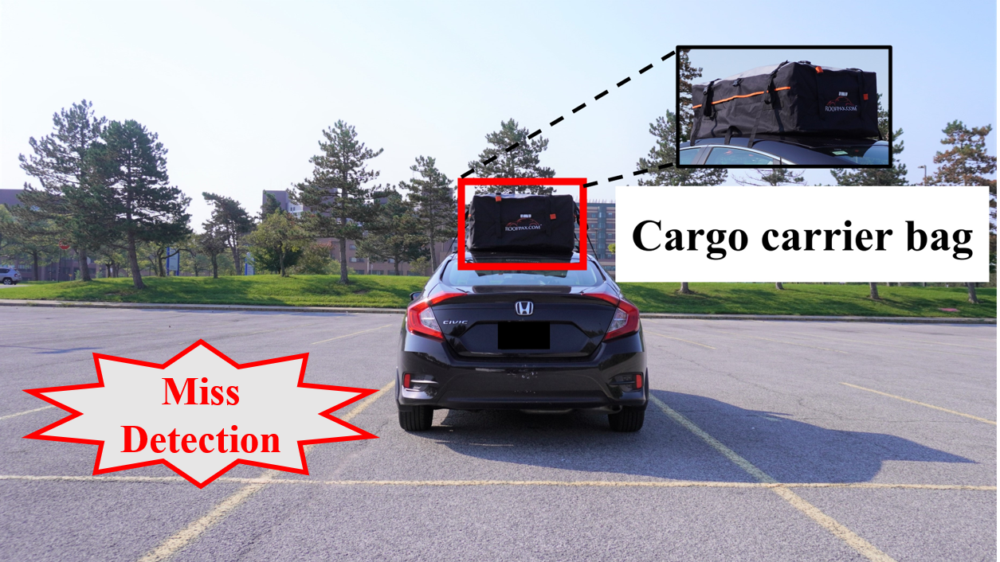
[SenSys'22] Towards Backdoor Attacks against LiDAR Object Detection in Autonomous Driving
Yan Zhang*, Yi Zhu* (equal contribution), Zihao Liu, Chenglin Miao, Foad Hajiaghajani, Lu Su, and Chunming Qiao. 2022 ACM Conference on Embedded Networked Sensor Systems.
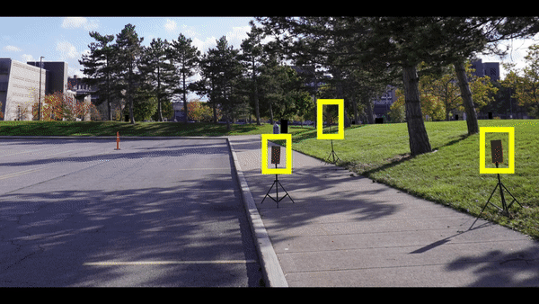
[SenSys'21] Adversarial Attacks against LiDAR Semantic Segmentation in Autonomous Driving
Yi Zhu, Chenglin Miao, Foad Hajiaghajani, Mengdi Huai, Lu Su, and Chunming Qiao. 2021 ACM Conference on Embedded Networked Sensor Systems. (Accept Rate: 17.9%)
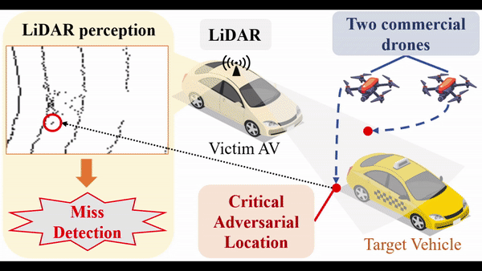
[CCS'21] Can We Use Arbitrary Objects to Attack LiDAR Perception in Autonomous Driving?
Yi Zhu, Chenglin Miao, Tianhang Zheng, Foad Hajiaghajani, Lu Su, and Chunming Qiao. 2021 ACM SIGSAC Conference on Computer and Communications Security. (Accept Rate: 22.3%)
Generative AI for Smart Manufacturing

IntelliMake Autonomous Factory, in collaboration with Dr. Ratna Babu Chinnam
Builing a generative AI-driven manufacturing system where planning agents coordinate robotics, edge controls, live telemetry, scheduling, and inline quality checks to autonomously move production from raw materials to packed goods.
Multi-Modal and Collaborative Sensing
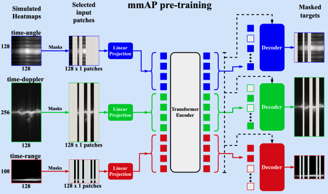
[BigData'24] Towards Robust mmWave-based Human Activity Recognition using Large Simulated Dataset for Model Pretraining
Vinay Joshi (Undergraduate Student), Shengkai Xu, Qiming Cao, Yi Zhu, Pu Wang, and Hongfei Xue. 2024 IEEE International Conference on Big Data.
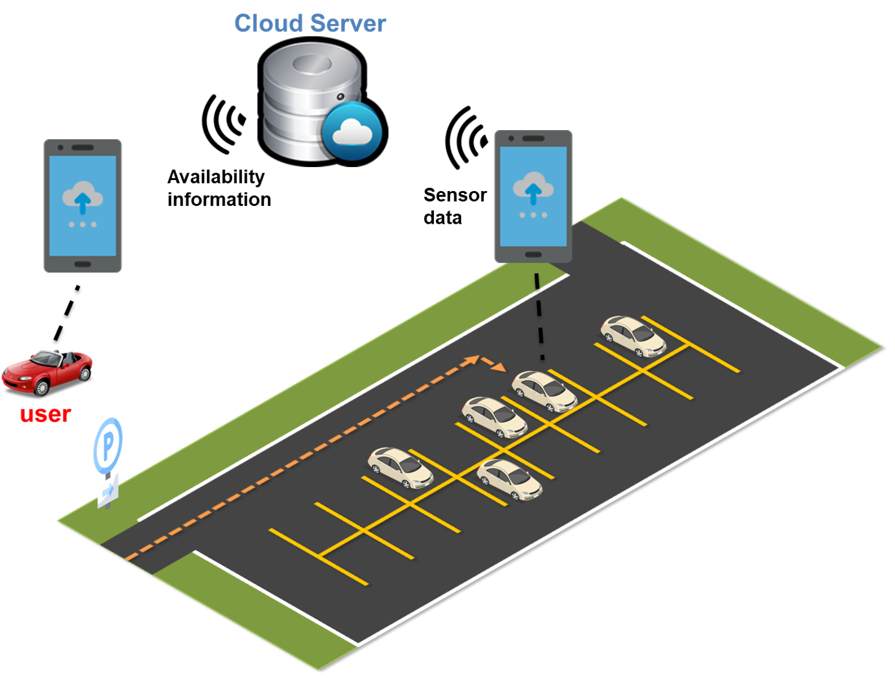
[TOSN] Driver Behavior-aware Parking Availability Crowdsensing System Using Truth Discovery
Yi Zhu, Abhishek Gupta, Shaohan Hu, Weida Zhong, Lu Su, and Chunming Qiao. ACM Transactions on Sensor Networks.